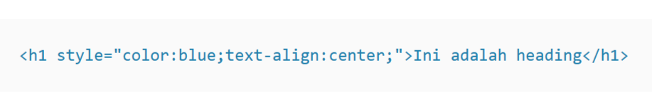
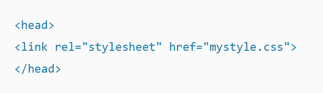
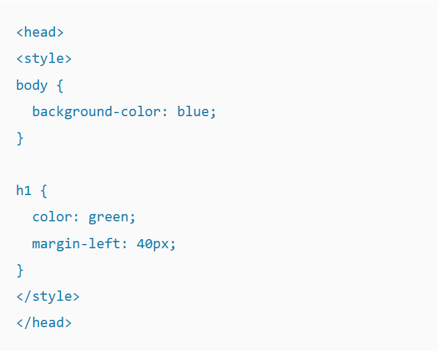

Tipe yang pertama adalah Inline CSS. Seperti namanya, kode CSS ini langsung ditempatkan di dalam baris kode HTML. Contohnya adalah seperti ini:
Jadi, kode HTML nya sendiri hanyalah penjelasan tentang heading. Namun, kode CSS dimasukkan untuk menambahkan style di sana, yaitu dengan menambahkan warna biru dan meratakan tulisan menjadi di tengah.
Yang terpenting dari Inline CSS adalah pengaruhnya. Style yang diberikan di sini spesifik hanya untuk heading, tidak untuk elemen HTML lainnya.
Kalau Inline CSS hanya mempengaruhi satu baris, External CSS bisa mempengaruhi keseluruhan website. Tentunya hal ini dilakukan dengan mengubah file CSS, tanpa perlu menuliskan kode secara berulang.
Perlu diperhatikan, ciri khas dari External CSS adalah menggunakan tag <.head>. Setelah itu, baru sisipkan file CSS sesuai kebutuhan. Contohnya seperti ini:
“mystyle.css” adalah file CSS yang ingin Anda sisipkan. Nah, di dalam file tersebut, kurang lebih seperti ini gambarannya:

Tipe yang terakhir adalah Internal CSS. Kurang lebih, tipe yang satu ini mirip dengan Inline CSS. Namun, kodenya tidak dituliskan di baris yang sama.
Contohnya adalah sebagai berikut:
